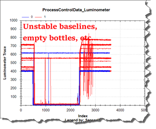
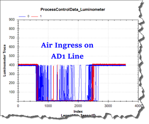
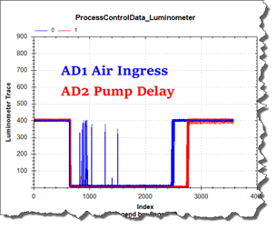
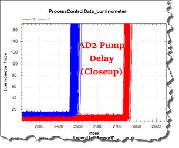
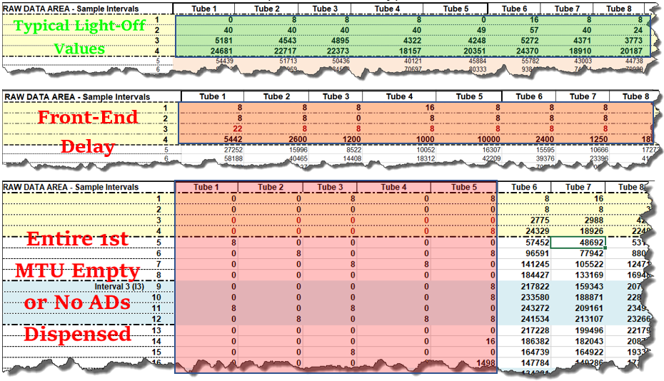
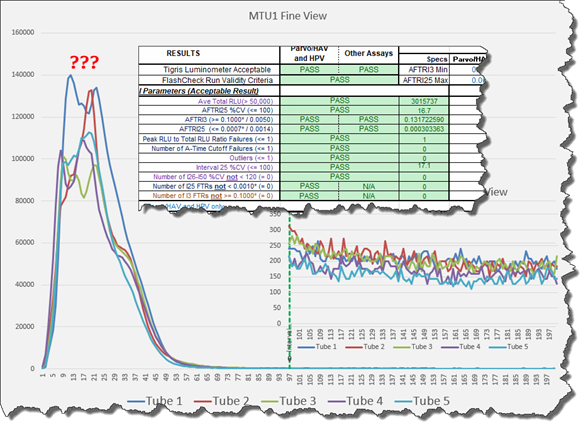
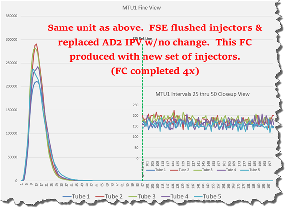

FlashCheck Evaluation
FlashCheck (FC) is simply a diagnostic tool used to help determine the efficacy of AutoDetect (AD) delivery and Injection, which produces the light-off in amplified reactions, as measured by the Luminometer. FC was created to mimic the performance of an amplified reaction without having to perform all the steps of the amplification process.
While there are many factors that can contribute to FlashCheck failures, any of the failures modes listed below can and most likely will be influenced by poor Lumo Injector performance, and in some cases, poor AD Pump(s) performance.
Error Modes
-
Interval 25 (I25) Failures (Most Common)
-
Interval 3 (I3) Failures
-
Outliers
-
A-Time Failures (Least Common)
Acceptance Criteria
The table below illustrates acceptance criteria for systems running HPV & non-HPV systems:
| HPV |
AC2 (non HPV) |
Parvo/HAV | Rule of Thumb | |
|---|---|---|---|---|
|
I3 Average |
≥ 0.16 |
≥ 0.0050 |
≥ 0.10 |
The higher, the better |
|
I25 Average |
N/A |
<= 0.0014 |
<= 0.0014 |
The lower, the better |
|
I25 %CV |
→ |
→ |
→ |
The lower, the better |
|
Individual I25 |
<= 0.0014 |
<= 0.0010 |
<= 0.0010 |
The lower, the better |
Reference Material
Panther Dashboard auto-analyzes FC data for Pass/Fail criteria. However, it may not provide subtle details that could help identify underlying issues prior to becoming bigger problems later, which could potentially contribute to poor assay or system performance. This TSG entry assumes use of the FlashCheck Analysis Spreadsheet to analyze Panther FC data.
In HUB, go to Content > Panther (Service) > TBs (Panther) > Flashcheck/Syscheck for latest versions of:
- TB-01298: Instructions for utilizing the FlashCheck Analysis Spreadsheet to Analyze Panther FC Data.
- FlashCheck_Analysis_Spreadsheet vX.XX
Technical Support
NA
Field Service
Systematic Approach to Troubleshooting
- Perform Pre-Service System Inspection (see below).
- Perform Luminometer CAL Factor & OLV Trace inspection (see below).
- Perform pre-service baseline FlashCheck (save all FC data for comparisons).
- Address potential contributors to failing or borderline criteria:
- Flush/replace injectors…
- Swap/replace AD pumps…
- Etc….
- Repeat FlashCheck and compare data, looking for improvement.

|
Note—Try to label parts swapped between FC attempts in case those parts need to be reinstalled to achieve better results. Example, if original injectors (or a pump) are removed after baseline FC, label them “FC1”, and so on…. |
Pre-Service System Inspection
- Inspect potential points of air ingress along fluidic paths:
- Inspect AD bottle caps & fittings for cracks.
- Clean AD bottle caps & fittings with DI water, then shake/blot dry.
- Ensure fittings along fluidic path are snug (do NOT over-tighten, you will crack them!): AD bottle fittings > A/B switching solenoids > AD pump(s) inlet/outlet ports.
- Ensure the AD1 & AD2 lines are properly routed:
- From bottles to correct A/B Switching Solenoid/inlet ports.
- From correct A/B Switching Solenoid outlet ports to correct LCMP/inlet ports.
- From correct LCMP outlet ports to correct lines on Lumo Injectors (they are specific!)
Luminometer CAL Factor & OLV Trace Inspection
-
In Service Software, verify Luminometer CAL Factor.
If CAL Factor = 1.0, perform Syscheck to re-calibrate Luminometer CAL Factor.
-
In System Software, “Force Full Prime” to recalibrate Luminometer OLV.
-
Zip logs and inspect the ProcessControlData_Luminometerxxx.curve file.
-
Address any observable issues prior to performing Pre-Service Baseline FlashCheck
Luminometer OLV Trace Examples




FlashCheck – What To Look For: (More than Pass/Fail Criteria!)
- Lumo OLV Traces: Re-inspect for abnormalities between each FC attempt. If observed, address potential contributors prior to subsequent FC attempts.
- Raw Light-off Data: Inspect the first several rows of raw data for zeros/eight/low values into/past 3rd & 4th Raw Data intervals: (Front End Delay)

-
Kinetics/Curves for Each MTU: Inspect for
- Front End Delay…
- Jagged Leading Edges…
- Peak Amplitude / Dips…
- Double Humps on Trailing Edges…
- Poor Signal Decay at Interval 25 (I25)


 button at the top of the page to send feedback, comments, or change requests.
button at the top of the page to send feedback, comments, or change requests.{kind=link}